Single Simulate Dense
Single Dense Simulation to See policy functions clearl
Contents
Simulate Set Parameters Defalt
clear all; close all; it_param_set = 8; [param_map, support_map] = ffs_ipwkbzr_fibs_set_default_param(it_param_set);
Simulate Set Parameters Dense
st_param_which = 'dense'; if (ismember(st_param_which, ["default"])) % support_map('it_display_every') = 10; param_map('it_maxiter_val') = 40; elseif (ismember(st_param_which, ["dense"])) support_map('it_display_every') = 1; param_map('it_maxiter_val') = 40; param_map('it_w_perc_n') = 150; param_map('it_ak_perc_n') = param_map('it_w_perc_n'); param_map('it_coh_bridge_perc_n') = param_map('it_w_perc_n')/3; param_map('fl_coh_interp_grid_gap') = 0.025; param_map('it_c_interp_grid_gap') = 10^-4; param_map('fl_w_interp_grid_gap') = 0.025; param_map('it_z_wage_n') = 7; param_map('fl_z_r_infbr_n') = 5; param_map('it_z_n') = param_map('it_z_wage_n') * param_map('fl_z_r_infbr_n'); end
Simulate
ff_ipwkbzr_fibs_ds_wrapper(param_map, support_map);
Elapsed time is 1103.554624 seconds.
----------------------------------------
----------------------------------------
xxxxxxxxxxxxxxxxxxxxxxxxxxxxxxxxxxxxxxxx
xxxxxxxxxxxxxxxxxxxxxxxxxxxxxxxxxxxxxxxx
Begin: Show all key and value pairs from container
CONTAINER NAME: SUPPORT_MAP
----------------------------------------
Map with properties:
Count: 48
KeyType: char
ValueType: any
xxxxxxxxxxxxxxxxxxxxxxxxxxxxxxxxxxxxxxxx
xxxxxxxxxxxxxxxxxxxxxxxxxxxxxxxxxxxxxxxx
----------------------------------------
----------------------------------------
pos = 34 ; key = st_img_name_main ; val = ff_ipwkbzr_fibs_vf_vecsvff_ipwkbzr_fibs_ds_wrapper_default
pos = 35 ; key = st_img_path ; val = C:/Users/fan/CodeDynaAsset//m_fibs//m_ipwkbzr_solve/img/
pos = 36 ; key = st_img_prefix ; val =
pos = 37 ; key = st_img_suffix ; val = _p8.png
pos = 38 ; key = st_mat_name_main ; val = ff_ipwkbzr_fibs_vf_vecsvff_ipwkbzr_fibs_ds_wrapper_default
pos = 39 ; key = st_mat_path ; val = C:/Users/fan/CodeDynaAsset//m_fibs//m_ipwkbzr_solve/mat/
pos = 40 ; key = st_mat_prefix ; val =
pos = 41 ; key = st_mat_suffix ; val = _p8
pos = 42 ; key = st_mat_test_path ; val = C:/Users/fan/CodeDynaAsset//m_fibs//test/ff_ipwkbzr_ds_vecsv/mat/
pos = 43 ; key = st_matimg_path_root ; val = C:/Users/fan/CodeDynaAsset//m_fibs/
pos = 44 ; key = st_profile_name_main ; val = ff_ipwkbzr_fibs_vf_vecsvff_ipwkbzr_fibs_ds_wrapper_default
pos = 45 ; key = st_profile_path ; val = C:/Users/fan/CodeDynaAsset//m_fibs//m_ipwkbzr_solve/profile/
pos = 46 ; key = st_profile_prefix ; val =
pos = 47 ; key = st_profile_suffix ; val = _p8
pos = 48 ; key = st_title_prefix ; val =
----------------------------------------
xxxxxxxxxxxxxxxxxxxxxxxxxxxxxxxxxxxxxxxx
Scalars in Container and Sizes and Basic Statistics
xxxxxxxxxxxxxxxxxxxxxxxxxxxxxxxxxxxxxxxx
i idx value
__ ___ _____
bl_display 1 1 0
bl_display_defparam 2 2 1
bl_display_dist 3 3 0
bl_display_evf 4 4 0
bl_display_final 5 5 0
bl_display_final_dist 6 6 1
bl_display_final_dist_detail 7 7 1
bl_display_funcgrids 8 8 0
bl_display_infbridge 9 9 0
bl_display_minccost 10 10 0
bl_graph 11 11 1
bl_graph_coh_t_coh 12 12 1
bl_graph_evf 13 13 0
bl_graph_forinf_discrete 14 14 1
bl_graph_forinf_pol_lvl 15 15 1
bl_graph_forinf_pol_pct 16 16 1
bl_graph_funcgrids 17 17 0
bl_graph_funcgrids_detail 18 18 0
bl_graph_onebyones 19 19 1
bl_graph_pol_lvl 20 20 0
bl_graph_pol_pct 21 21 0
bl_graph_val 22 22 0
bl_img_save 23 23 0
bl_mat 24 24 0
bl_post 25 25 1
bl_profile 26 26 0
bl_profile_dist 27 27 0
bl_time 28 28 1
it_display_every 29 29 1
it_display_final_colmax 30 30 12
it_display_final_rowmax 31 31 100
it_display_summmat_colmax 32 32 7
it_display_summmat_rowmax 33 33 7
----------------------------------------
----------------------------------------
xxxxxxxxxxxxxxxxxxxxxxxxxxxxxxxxxxxxxxxx
xxxxxxxxxxxxxxxxxxxxxxxxxxxxxxxxxxxxxxxx
Begin: Show all key and value pairs from container
CONTAINER NAME: ARMT_MAP
----------------------------------------
Map with properties:
Count: 45
KeyType: char
ValueType: any
xxxxxxxxxxxxxxxxxxxxxxxxxxxxxxxxxxxxxxxx
xxxxxxxxxxxxxxxxxxxxxxxxxxxxxxxxxxxxxxxx
----------------------------------------
----------------------------------------
----------------------------------------
xxxxxxxxxxxxxxxxxxxxxxxxxxxxxxxxxxxxxxxx
Matrix in Container and Sizes and Basic Statistics
xxxxxxxxxxxxxxxxxxxxxxxxxxxxxxxxxxxxxxxx
i idx rowN colN mean std min max
__ ___ __________ __________ ________ __________ __________ ___________
ar_a 1 1 1 3087 18.588 22.292 -20 57.189
ar_a_meshk 2 2 3087 1 18.588 22.292 -20 57.189
ar_a_meshk_ori 3 3 6.3e+06 1 -14.169 6.6288 -20 49.93
ar_ak_perc 4 4 1 150 0.5 0.291 0.001 0.999
ar_ameshk_tnext_with_r 5 5 6.3e+06 5 -14.953 6.938 -21.9 51.178
ar_aplusk_mesh 6 6 6.3e+06 1 -8.3387 9.8632 -20 50
ar_coh_bridge_perc 7 7 1 50 0.5 0.2975 0 1
ar_forbrblk 8 8 1 14 -9.2857 6.2163 -19 0
ar_forbrblk_r 9 9 1 14 0.065 2.8803e-17 0.065 0.065
ar_interp_c_grid 10 10 1 7.7169e+05 38.604 22.277 0.02 77.189
ar_interp_coh_grid 11 11 1 3087 18.588 22.292 -20 57.189
ar_k_mesha 12 12 3087 1 0 0 0 0
ar_k_mesha_ori 13 13 6.3e+06 1 5.8307 6.6288 0 69.93
ar_w_level 14 14 1 2800 14.995 20.216 -20 50
ar_w_level_full 15 15 1 42000 -8.3387 9.8633 -20 50
ar_w_perc 16 16 1 150 0.5 0.291 0.001 0.999
ar_z_r_infbr 17 17 1 5 0.06 0.02767 0.025 0.095
ar_z_r_infbr_mesh_wage_r1w2 18 18 1 35 0.06 0.02511 0.025 0.095
ar_z_r_infbr_mesh_wage_w1r2 19 19 1 35 0.06 0.02511 0.025 0.095
ar_z_r_infbr_prob 20 20 1 5 0.2 0.34803 0.00012164 0.81093
ar_z_wage 21 21 1 7 1.1563 0.79411 0.34387 2.5409
ar_z_wage_mesh_r_infbr_r1w2 22 22 1 35 1.1563 0.74594 0.34387 2.5409
ar_z_wage_mesh_r_infbr_w1r2 23 23 1 35 1.1563 0.74594 0.34387 2.5409
ar_z_wage_prob 24 24 1 7 0.14286 0.13646 0.0093649 0.35951
cl_mt_coh_wkb_mesh_z_r_infbr 25 25 6.3e+06 35 -6.8114 10.219 -20.056 57.189
mt_bl_w_perc_mesh_interp_coh_grid_wneg 26 27 150 3087 0.60927 0.48792 0 1
mt_coh_bridge_perc_mesh_w_level_neg 27 28 800 50 0.5 0.29451 0 1
mt_coh_w_perc_ratio_wneg 28 29 2.8212e+05 1 0.72543 0.37109 0 1
mt_coh_wkb 29 30 3087 35 18.588 22.289 -20 57.189
mt_coh_wkb_ori 30 31 3.15e+07 7 -7.2408 10.332 -21.456 57.189
mt_interp_coh_grid_mesh_w_perc 31 32 150 3087 18.588 22.289 -20 57.189
mt_interp_coh_grid_mesh_z 32 33 3087 35 18.588 22.289 -20 57.189
mt_interp_coh_grid_mesh_z_wage 33 34 3087 7 18.588 22.289 -20 57.189
mt_k 34 35 150 42000 5.8307 6.6288 0 69.93
mt_w_level_neg_mesh_coh_bridge_perc 35 36 800 50 -10.005 5.7777 -20 -0.010722
mt_w_perc_mesh_interp_coh_grid 36 37 150 3087 -0.70586 17.066 -20 57.111
mt_w_perc_mesh_interp_coh_grid_wneg 37 38 2.8212e+05 1 -12.156 5.8018 -20 -9.3731e-05
mt_w_perc_mesh_interp_coh_grid_wpos 38 39 1.8093e+05 1 17.148 13.025 0.00027856 57.111
mt_z_mesh_coh_wkb 39 40 3.15e+07 35 18 10.1 1 35
mt_z_mesh_coh_wkb_seg 40 41 6.3e+06 35 18 10.1 1 35
mt_z_mesh_interp_coh_grid 41 42 3087 35 18 10.1 1 35
mt_z_trans 42 43 35 35 0.028571 0.086956 1.3505e-20 0.48278
mt_z_wage_mesh_coh_wkb 43 44 3.15e+07 7 1.1563 0.73521 0.34387 2.5409
mt_z_wage_mesh_interp_coh_grid 44 45 3087 7 1.1563 0.73522 0.34387 2.5409
----------------------------------------
xxxxxxxxxxxxxxxxxxxxxxxxxxxxxxxxxxxxxxxx
Scalars in Container and Sizes and Basic Statistics
xxxxxxxxxxxxxxxxxxxxxxxxxxxxxxxxxxxxxxxx
i idx value
_ ___ _____
it_ameshk_n 1 26 3087
----------------------------------------
----------------------------------------
xxxxxxxxxxxxxxxxxxxxxxxxxxxxxxxxxxxxxxxx
xxxxxxxxxxxxxxxxxxxxxxxxxxxxxxxxxxxxxxxx
Begin: Show all key and value pairs from container
CONTAINER NAME: PARAM_MAP
----------------------------------------
Map with properties:
Count: 51
KeyType: char
ValueType: any
xxxxxxxxxxxxxxxxxxxxxxxxxxxxxxxxxxxxxxxx
xxxxxxxxxxxxxxxxxxxxxxxxxxxxxxxxxxxxxxxx
----------------------------------------
----------------------------------------
pos = 46 ; key = st_analytical_stationary_type ; val = eigenvector
pos = 47 ; key = st_forbrblk_type ; val = unif
pos = 48 ; key = st_model ; val = ipwkbzr_fibs
pos = 49 ; key = st_v_coh_z_interp_method ; val = method_cell
pos = 50 ; key = st_z_r_infbr_drv_ele_type ; val = unif
pos = 51 ; key = st_z_r_infbr_drv_prb_type ; val = poiss
----------------------------------------
xxxxxxxxxxxxxxxxxxxxxxxxxxxxxxxxxxxxxxxx
Scalars in Container and Sizes and Basic Statistics
xxxxxxxxxxxxxxxxxxxxxxxxxxxxxxxxxxxxxxxx
i idx value
__ ___ _______
bl_b_is_principle 1 1 1
bl_bridge 2 2 1
bl_default 3 3 1
bl_rollover 4 4 1
fl_Amean 5 5 1
fl_alpha 6 6 0.36
fl_b_bd 7 7 -20
fl_beta 8 8 0.94
fl_c_min 9 9 0.02
fl_coh_interp_grid_gap 10 10 0.025
fl_crra 11 11 1.5
fl_default_wprime 12 12 0
fl_delta 13 13 0.08
fl_forbrblk_brleast 14 14 -1
fl_forbrblk_brmost 15 15 -19
fl_forbrblk_gap 16 16 -1.5
fl_k_max 17 17 70
fl_k_min 18 18 0
fl_nan_replace 19 19 -9999
fl_r_fbr 20 20 0.065
fl_r_fsv 21 21 0.025
fl_r_inf 22 22 0.095
fl_tol_dist 23 23 1e-05
fl_tol_pol 24 24 1e-05
fl_tol_val 25 25 1e-05
fl_w 26 26 0.44365
fl_w_interp_grid_gap 27 27 0.025
fl_w_max 28 28 50
fl_w_min 29 29 -20
fl_z_r_infbr_max 30 30 0.095
fl_z_r_infbr_min 31 31 0.025
fl_z_r_infbr_n 32 32 5
fl_z_r_infbr_poiss_mean 33 33 20
fl_z_wage_mu 34 34 0
fl_z_wage_rho 35 35 0.8
fl_z_wage_sig 36 36 0.2
it_ak_perc_n 37 37 150
it_c_interp_grid_gap 38 38 0.0001
it_coh_bridge_perc_n 39 39 50
it_maxiter_dist 40 40 1000
it_maxiter_val 41 41 40
it_tol_pol_nochange 42 42 25
it_w_perc_n 43 43 150
it_z_n 44 44 35
it_z_wage_n 45 45 7
----------------------------------------
----------------------------------------
xxxxxxxxxxxxxxxxxxxxxxxxxxxxxxxxxxxxxxxx
xxxxxxxxxxxxxxxxxxxxxxxxxxxxxxxxxxxxxxxx
Begin: Show all key and value pairs from container
CONTAINER NAME: FUNC_MAP
----------------------------------------
Map with properties:
Count: 10
KeyType: char
ValueType: any
xxxxxxxxxxxxxxxxxxxxxxxxxxxxxxxxxxxxxxxx
xxxxxxxxxxxxxxxxxxxxxxxxxxxxxxxxxxxxxxxx
----------------------------------------
----------------------------------------
pos = 1 ; key = f_coh ; val = @(z,b_with_r,k)(f_prod(z,k)+k*(1-fl_delta)+fl_w+b_with_r)
pos = 2 ; key = f_coh_fbis ; val = @(fl_r_inf,ar_for_borr,ar_inf_borr,ar_for_save)(ar_for_borr.*(1+fl_r_fbr)+ar_inf_borr.*(1+fl_r_inf)+ar_for_save.*(1+fl_r_fsv))
pos = 3 ; key = f_coh_save ; val = @(b)(b.*(1+fl_r_fsv))
pos = 4 ; key = f_cons ; val = @(coh,bprime,kprime)(coh-kprime-bprime)
pos = 5 ; key = f_inc ; val = @(z,k,fl_r_inf,ar_for_borr,ar_inf_borr,ar_for_save)(f_prod(z,k)-(fl_delta)*k+fl_w+(ar_for_borr.*(fl_r_fbr)+ar_inf_borr.*(fl_r_inf)+ar_for_save.*(fl_r_fsv)))
pos = 6 ; key = f_prod ; val = @(z,k)((fl_Amean.*(z)).*(k.^(fl_alpha)))
pos = 7 ; key = f_util_crra ; val = @(c)(((c).^(1-fl_crra)-1)./(1-fl_crra))
pos = 8 ; key = f_util_log ; val = @(c)log(c)
pos = 9 ; key = f_util_standin ; val = @(z,b,k)f_util_log((f_coh(z,b,k)-fl_b_bd).*((f_coh(z,b,k)-fl_b_bd)>fl_c_min)+fl_c_min.*((f_coh(z,b,k)-fl_b_bd)<=fl_c_min))
pos = 10 ; key = f_util_standin_coh ; val = @(coh,fl_r_borr)f_util_log((coh-fl_b_bd).*((coh>0)&(((coh-fl_b_bd)./(1))>fl_c_min))+((coh-fl_b_bd)./(1)).*((coh<=0)&(((coh-fl_b_bd)./(1))>fl_c_min))+(fl_c_min./(1+fl_r_borr)).*((((coh-fl_b_bd)./(1))<=fl_c_min)))
----------------------------------------
xxxxxxxxxxxxxxxxxxxxxxxxxxxxxxxxxxxxxxxx
Scalars in Container and Sizes and Basic Statistics
xxxxxxxxxxxxxxxxxxxxxxxxxxxxxxxxxxxxxxxx
i idx xFunction
__ ___ _________
f_coh 1 1 1
f_coh_fbis 2 2 2
f_coh_save 3 3 3
f_cons 4 4 4
f_inc 5 5 5
f_prod 6 6 6
f_util_crra 7 7 7
f_util_log 8 8 8
f_util_standin 9 9 9
f_util_standin_coh 10 10 10
----------------------------------------
----------------------------------------
xxxxxxxxxxxxxxxxxxxxxxxxxxxxxxxxxxxxxxxx
xxxxxxxxxxxxxxxxxxxxxxxxxxxxxxxxxxxxxxxx
Begin: Show all key and value pairs from container
CONTAINER NAME: RESULT_MAP
----------------------------------------
Map with properties:
Count: 27
KeyType: char
ValueType: any
xxxxxxxxxxxxxxxxxxxxxxxxxxxxxxxxxxxxxxxx
xxxxxxxxxxxxxxxxxxxxxxxxxxxxxxxxxxxxxxxx
----------------------------------------
----------------------------------------
pos = 2 ; key = ar_st_pol_names ; val = cl_mt_coh cl_mt_pol_a cl_mt_pol_k cl_mt_pol_c cl_mt_pol_a_principleonly cl_mt_pol_b_bridge cl_mt_pol_inf_borr_nobridge cl_mt_pol_for_borr cl_mt_pol_for_save cl_mt_it_for_only_nbdg cl_mt_it_inf_only_nbdg cl_mt_it_frin_brr_nbdg cl_mt_it_fr_brrsv_nbdg cl_mt_it_frmsavng_only
----------------------------------------
xxxxxxxxxxxxxxxxxxxxxxxxxxxxxxxxxxxxxxxx
Matrix in Container and Sizes and Basic Statistics
xxxxxxxxxxxxxxxxxxxxxxxxxxxxxxxxxxxxxxxx
i idx rowN colN mean std min max
__ ___ ____ ____ __________ __________ __________ __________
ar_pol_diff_norm 1 1 40 1 562.87 1589.6 28.353 7633.7
ar_val_diff_norm 2 3 40 1 99.937 131.94 5.1461 539.64
cl_mt_coh 3 4 3087 35 18.588 22.289 -20 57.189
cl_mt_cons 4 5 3087 35 2.8718 2.5233 -19.953 6.603
cl_mt_it_for_only_nbdg 5 6 3087 35 0 0 0 0
cl_mt_it_fr_brrsv_nbdg 6 7 3087 35 0.038799 0.19312 0 1
cl_mt_it_frin_brr_nbdg 7 8 3087 35 0.094479 0.2925 0 1
cl_mt_it_frmsavng_only 8 9 3087 35 0.63153 0.48239 0 1
cl_mt_it_inf_only_nbdg 9 10 3087 35 0.23519 0.42412 0 1
cl_mt_pol_a 10 11 3087 35 8.6005 20.34 -21.899 49.446
cl_mt_pol_a_principleonly 11 12 3087 35 8.5271 19.675 -20 48.24
cl_mt_pol_b_bridge 12 13 3087 35 -2.5926 5.2791 -20 0
cl_mt_pol_c 13 14 3087 35 3.1677 1.5526 0.02 7.3153
cl_mt_pol_for_borr 14 15 3087 35 -0.6892 2.1481 -14.5 0
cl_mt_pol_for_save 15 16 3087 35 13.171 14.708 0 48.24
cl_mt_pol_inf_borr_nobridge 16 17 3087 35 -1.3624 3.205 -19.982 0
cl_mt_pol_k 17 18 3087 35 7.1161 5.7466 5.0041e-07 21.674
mt_it_b_bridge_idx 18 19 3087 35 0.25915 0.43817 0 1
mt_it_for_only_nbdg 19 20 3087 35 0 0 0 0
mt_it_fr_brrsv_nbdg 20 21 3087 35 0.038799 0.19312 0 1
mt_it_frin_brr_nbdg 21 22 3087 35 0.094479 0.2925 0 1
mt_it_frmsavng_only 22 23 3087 35 0.63153 0.48239 0 1
mt_it_inf_only_nbdg 23 24 3087 35 0.23519 0.42412 0 1
mt_pol_idx 24 25 3087 35 2.3158e+05 1.3368e+05 1 4.6304e+05
mt_pol_perc_change 25 26 40 35 0.45956 0.39124 0.0042112 1
mt_val 26 27 3087 35 8.941 6.5801 -8.7509 16.419
Elapsed time is 127.973539 seconds.
----------------------------------------
xxxxxxxxxxxxxxxxxxxxxxxxxxxxxxxxxxxxxxxx
Summary Statistics for: cl_mt_coh
xxxxxxxxxxxxxxxxxxxxxxxxxxxxxxxxxxxxxxxx
----------------------------------------
fl_choice_mean
2.3797
fl_choice_sd
6.5450
fl_choice_coefofvar
2.7503
fl_choice_prob_zero
3.3781e-04
fl_choice_prob_below_zero
0.2791
fl_choice_prob_above_zero
0.7206
fl_choice_prob_max
2.4761e-36
tb_disc_cumu
cl_mt_cohDiscreteVal cl_mt_cohDiscreteValProbMass CDF cumsumFrac
____________________ ____________________________ _______ __________
-20 0.0079957 0.79957 -0.0672
-19.975 1.4417e-36 0.79957 -0.0672
-19.95 7.693e-38 0.79957 -0.0672
-19.925 1.6464e-36 0.79957 -0.0672
-19.9 -2.214e-36 0.79957 -0.0672
-19.875 -1.8157e-36 0.79957 -0.0672
-19.85 -2.6676e-37 0.79957 -0.0672
-19.825 -3.5521e-37 0.79957 -0.0672
-19.8 2.0108e-36 0.79957 -0.0672
-19.775 1.1428e-36 0.79957 -0.0672
cl_mt_cohDiscreteVal cl_mt_cohDiscreteValProbMass CDF cumsumFrac
____________________ ____________________________ ___ __________
56.963 1.5033e-12 100 1
56.988 2.3759e-12 100 1
57.013 3.0454e-12 100 1
57.039 1.2923e-12 100 1
57.064 1.0267e-12 100 1
57.089 4.8147e-13 100 1
57.114 4.5746e-12 100 1
57.139 4.752e-14 100 1
57.164 1.4183e-13 100 1
57.189 2.4761e-36 100 1
tb_prob_drv
percentiles cl_mt_cohDiscreteValPercentileValues fracOfSumHeldBelowThisPercentile
___________ ____________________________________ ________________________________
0.1 -20 -0.0672
1 -18.424 -0.083547
5 -10.667 -0.32212
10 -5.413 -0.48488
15 -2.7358 -0.56743
20 -1.2846 -0.60849
25 -0.40885 -0.6255
35 0.91724 -0.61433
50 2.9439 -0.48976
65 4.8455 -0.24361
75 6.2216 -0.013156
80 7.0723 0.12748
85 8.0481 0.28485
90 9.3492 0.46689
95 11.701 0.68388
99 17.281 0.91441
99.9 24.412 0.98859
----------------------------------------
xxxxxxxxxxxxxxxxxxxxxxxxxxxxxxxxxxxxxxxx
Summary Statistics for: cl_mt_pol_a
xxxxxxxxxxxxxxxxxxxxxxxxxxxxxxxxxxxxxxxx
----------------------------------------
fl_choice_mean
-4.0519
fl_choice_sd
5.3226
fl_choice_coefofvar
-1.3136
fl_choice_prob_zero
0
fl_choice_prob_below_zero
0.7793
fl_choice_prob_above_zero
0.2207
fl_choice_prob_max
-2.6331e-37
tb_disc_cumu
cl_mt_pol_aDiscreteVal cl_mt_pol_aDiscreteValProbMass CDF cumsumFrac
______________________ ______________________________ __________ __________
-21.899 1.3533e-14 1.3533e-12 7.3144e-14
-21.899 1.2343e-13 1.3696e-11 7.4023e-13
-21.899 4.5056e-13 5.8752e-11 3.1754e-12
-21.899 4.213e-13 1.0088e-10 5.4524e-12
-21.897 1.5794e-11 1.6802e-09 9.0805e-11
-21.896 1.1843e-10 1.3523e-08 7.3078e-10
-21.894 4.8159e-10 6.1682e-08 3.333e-09
-21.892 8.2284e-10 1.4397e-07 7.7787e-09
-21.89 3.1731e-09 4.6128e-07 2.4921e-08
-21.888 6.5533e-09 1.1166e-06 6.0323e-08
cl_mt_pol_aDiscreteVal cl_mt_pol_aDiscreteValProbMass CDF cumsumFrac
______________________ ______________________________ ___ __________
49.329 6.5053e-37 100 1
49.338 2.3568e-37 100 1
49.339 -1.1019e-37 100 1
49.352 -1.5373e-37 100 1
49.361 7.7717e-37 100 1
49.375 2.8677e-37 100 1
49.385 2.9898e-37 100 1
49.399 4.9391e-37 100 1
49.422 -2.705e-37 100 1
49.446 -2.6331e-37 100 1
tb_prob_drv
percentiles cl_mt_pol_aDiscreteValPercentileValues fracOfSumHeldBelowThisPercentile
___________ ______________________________________ ________________________________
0.1 -21.868 0.0056607
1 -21.777 0.05406
5 -16.101 0.24467
10 -10.819 0.40714
15 -8.2506 0.523
20 -7.1433 0.61662
25 -5.9238 0.69639
35 -4.3355 0.82957
50 -2.6939 0.967
65 -1.0719 1.0393
75 -0.023411 1.0511
80 0.016714 1.0512
85 0.052109 1.0507
90 0.11325 1.0498
95 1.2004 1.0437
99 4.982 1.0188
99.9 10.865 1.0032
----------------------------------------
xxxxxxxxxxxxxxxxxxxxxxxxxxxxxxxxxxxxxxxx
Summary Statistics for: cl_mt_pol_k
xxxxxxxxxxxxxxxxxxxxxxxxxxxxxxxxxxxxxxxx
----------------------------------------
fl_choice_mean
4.5862
fl_choice_sd
2.3218
fl_choice_coefofvar
0.5062
fl_choice_prob_zero
0
fl_choice_prob_below_zero
0
fl_choice_prob_above_zero
1.0000
fl_choice_prob_max
1.6173e-11
tb_disc_cumu
cl_mt_pol_kDiscreteVal cl_mt_pol_kDiscreteValProbMass CDF cumsumFrac
______________________ ______________________________ __________ __________
5.0041e-07 1.6689e-14 1.6689e-12 1.8209e-21
5.2543e-07 1.522e-13 1.6889e-11 1.9259e-20
5.5045e-07 5.5561e-13 7.245e-11 8.5944e-20
5.7547e-07 5.1953e-13 1.244e-10 1.5113e-19
6.0049e-07 1.9476e-11 2.072e-09 2.7012e-18
6.2552e-07 1.4604e-10 1.6676e-08 2.262e-17
6.5054e-07 5.9387e-10 7.6063e-08 1.0686e-16
6.7556e-07 1.0147e-09 1.7753e-07 2.5632e-16
7.0058e-07 3.9129e-09 5.6882e-07 8.5405e-16
7.256e-07 8.0812e-09 1.3769e-06 2.1326e-15
cl_mt_pol_kDiscreteVal cl_mt_pol_kDiscreteValProbMass CDF cumsumFrac
______________________ ______________________________ ___ __________
21.648 1.5143e-11 100 1
21.652 9.3609e-12 100 1
21.653 2.0978e-12 100 1
21.655 3.6364e-11 100 1
21.656 5.7098e-11 100 1
21.66 9.2287e-12 100 1
21.66 1.4075e-12 100 1
21.664 2.1347e-10 100 1
21.667 1.3222e-11 100 1
21.674 1.6173e-11 100 1
tb_prob_drv
percentiles cl_mt_pol_kDiscreteValPercentileValues fracOfSumHeldBelowThisPercentile
___________ ______________________________________ ________________________________
0.1 1.4262e-06 3.0958e-10
1 1.0141 0.00040651
5 1.5342 0.01205
10 2.2546 0.033702
15 2.5727 0.060155
20 2.7357 0.089038
25 2.826 0.11956
35 3.5432 0.18953
50 4.1526 0.3186
65 5.1603 0.46254
75 5.7214 0.58278
80 6.0224 0.64689
85 6.2628 0.71362
90 8.0187 0.78834
95 9.028 0.88139
99 12.866 0.96885
99.9 15.986 0.99594
----------------------------------------
xxxxxxxxxxxxxxxxxxxxxxxxxxxxxxxxxxxxxxxx
Summary Statistics for: cl_mt_pol_c
xxxxxxxxxxxxxxxxxxxxxxxxxxxxxxxxxxxxxxxx
----------------------------------------
fl_choice_mean
1.7083
fl_choice_sd
0.4947
fl_choice_coefofvar
0.2896
fl_choice_prob_zero
0
fl_choice_prob_below_zero
0
fl_choice_prob_above_zero
1.0000
fl_choice_prob_max
2.9408e-36
tb_disc_cumu
cl_mt_pol_cDiscreteVal cl_mt_pol_cDiscreteValProbMass CDF cumsumFrac
______________________ ______________________________ _______ __________
0.02 0.0079957 0.79957 9.3611e-05
0.49991 1.6689e-14 0.79957 9.3611e-05
0.52491 1.522e-13 0.79957 9.3611e-05
0.5499 5.5561e-13 0.79957 9.3611e-05
0.5749 5.1953e-13 0.79957 9.3611e-05
0.59989 1.9476e-11 0.79957 9.3611e-05
0.62489 1.4604e-10 0.79957 9.3611e-05
0.64989 5.9387e-10 0.79957 9.3612e-05
0.67488 1.0147e-09 0.79957 9.3612e-05
0.69988 3.9129e-09 0.79957 9.3614e-05
cl_mt_pol_cDiscreteVal cl_mt_pol_cDiscreteValProbMass CDF cumsumFrac
______________________ ______________________________ ___ __________
7.2987 3.0454e-12 100 1
7.3011 1.2923e-12 100 1
7.3034 1.0267e-12 100 1
7.3058 4.8147e-13 100 1
7.3082 4.5746e-12 100 1
7.3082 4.0994e-37 100 1
7.3106 4.752e-14 100 1
7.3129 1.4183e-13 100 1
7.3153 -4.6473e-37 100 1
7.3153 2.9408e-36 100 1
tb_prob_drv
percentiles cl_mt_pol_cDiscreteValPercentileValues fracOfSumHeldBelowThisPercentile
___________ ______________________________________ ________________________________
0.1 0.02 9.3611e-05
1 1.1576 0.0014844
5 1.2161 0.029856
10 1.2587 0.065989
15 1.2927 0.10309
20 1.3278 0.14171
25 1.3641 0.18082
35 1.4441 0.26304
50 1.5863 0.39545
65 1.7553 0.54298
75 1.9577 0.65007
80 2.0367 0.70953
85 2.1674 0.76973
90 2.4168 0.83684
95 2.6653 0.91067
99 3.2526 0.97933
99.9 3.96 0.99755
----------------------------------------
xxxxxxxxxxxxxxxxxxxxxxxxxxxxxxxxxxxxxxxx
Summary Statistics for: cl_mt_pol_a_principleonly
xxxxxxxxxxxxxxxxxxxxxxxxxxxxxxxxxxxxxxxx
----------------------------------------
fl_choice_mean
-3.7547
fl_choice_sd
4.9387
fl_choice_coefofvar
-1.3153
fl_choice_prob_zero
0
fl_choice_prob_below_zero
0.7793
fl_choice_prob_above_zero
0.2207
fl_choice_prob_max
-2.6331e-37
tb_disc_cumu
cl_mt_pol_a_principleonlyDiscreteVal cl_mt_pol_a_principleonlyDiscreteValProbMass CDF cumsumFrac
____________________________________ ____________________________________________ __________ __________
-20 2.3498e-38 2.3498e-36 1.2516e-37
-20 1.1209e-18 1.1209e-16 5.9706e-18
-20 -2.1324e-37 1.1209e-16 5.9706e-18
-20 1.6173e-14 1.6174e-12 8.615e-14
-20 7.6452e-37 1.6174e-12 8.615e-14
-20 7.3233e-14 8.9407e-12 4.7623e-13
-20 1.6939e-14 1.0635e-11 5.6645e-13
-20 6.7768e-10 6.7778e-08 3.6102e-09
-20 1.2738e-37 6.7778e-08 3.6102e-09
-20 1.0504e-11 6.8829e-08 3.6662e-09
cl_mt_pol_a_principleonlyDiscreteVal cl_mt_pol_a_principleonlyDiscreteValProbMass CDF cumsumFrac
____________________________________ ____________________________________________ ___ __________
48.125 6.5053e-37 100 1
48.134 2.3568e-37 100 1
48.136 -1.1019e-37 100 1
48.148 -1.5373e-37 100 1
48.157 7.7717e-37 100 1
48.171 2.8677e-37 100 1
48.18 2.9898e-37 100 1
48.194 4.9391e-37 100 1
48.217 -2.705e-37 100 1
48.24 -2.6331e-37 100 1
tb_prob_drv
percentiles cl_mt_pol_a_principleonlyDiscreteValPercentileValues fracOfSumHeldBelowThisPercentile
___________ ____________________________________________________ ________________________________
0.1 -19.999 0.0054936
1 -19.998 0.053532
5 -14.917 0.24344
10 -10.052 0.40583
15 -7.6826 0.52216
20 -6.6579 0.61705
25 -5.5574 0.69676
35 -4.0602 0.83088
50 -2.5287 0.96877
65 -1.0063 1.0419
75 -0.02138 1.0538
80 0.016307 1.0539
85 0.050838 1.0534
90 0.11049 1.0524
95 1.1711 1.046
99 4.8604 1.0198
99.9 10.6 1.0034
----------------------------------------
xxxxxxxxxxxxxxxxxxxxxxxxxxxxxxxxxxxxxxxx
Summary Statistics for: cl_mt_pol_b_bridge
xxxxxxxxxxxxxxxxxxxxxxxxxxxxxxxxxxxxxxxx
----------------------------------------
fl_choice_mean
-1.4943
fl_choice_sd
3.7574
fl_choice_coefofvar
-2.5146
fl_choice_prob_zero
0.7209
fl_choice_prob_below_zero
0.2791
fl_choice_prob_above_zero
0
fl_choice_prob_max
0.7209
tb_disc_cumu
cl_mt_pol_b_bridgeDiscreteVal cl_mt_pol_b_bridgeDiscreteValProbMass CDF cumsumFrac
_____________________________ _____________________________________ _______ __________
-20 0.0079957 0.79957 0.10702
-19.975 1.4417e-36 0.79957 0.10702
-19.95 7.693e-38 0.79957 0.10702
-19.925 1.6464e-36 0.79957 0.10702
-19.9 -2.214e-36 0.79957 0.10702
-19.875 -1.8157e-36 0.79957 0.10702
-19.85 -2.6676e-37 0.79957 0.10702
-19.825 -3.5521e-37 0.79957 0.10702
-19.8 2.0108e-36 0.79957 0.10702
-19.775 1.1428e-36 0.79957 0.10702
cl_mt_pol_b_bridgeDiscreteVal cl_mt_pol_b_bridgeDiscreteValProbMass CDF cumsumFrac
_____________________________ _____________________________________ ______ __________
-0.20869 0.0020319 26.645 0.99919
-0.18367 0.0015621 26.801 0.99938
-0.15864 0.0014959 26.951 0.99954
-0.13362 0.0016115 27.112 0.99969
-0.1086 0.0015164 27.263 0.9998
-0.083583 0.0016951 27.433 0.99989
-0.058562 0.0015621 27.589 0.99995
-0.033542 0.0016927 27.758 0.99999
-0.008521 0.001506 27.909 1
0 0.72091 100 1
tb_prob_drv
percentiles cl_mt_pol_b_bridgeDiscreteValPercentileValues fracOfSumHeldBelowThisPercentile
___________ _____________________________________________ ________________________________
0.1 -20 0.10702
1 -18.424 0.13305
5 -10.667 0.513
10 -5.413 0.77219
15 -2.7358 0.90367
20 -1.2846 0.96905
25 -0.40885 0.99615
35 0 1
50 0 1
65 0 1
75 0 1
80 0 1
85 0 1
90 0 1
95 0 1
99 0 1
99.9 0 1
----------------------------------------
xxxxxxxxxxxxxxxxxxxxxxxxxxxxxxxxxxxxxxxx
Summary Statistics for: cl_mt_pol_inf_borr_nobridge
xxxxxxxxxxxxxxxxxxxxxxxxxxxxxxxxxxxxxxxx
----------------------------------------
fl_choice_mean
-0.1059
fl_choice_sd
0.6074
fl_choice_coefofvar
-5.7343
fl_choice_prob_zero
0.5003
fl_choice_prob_below_zero
0.4997
fl_choice_prob_above_zero
0
fl_choice_prob_max
0.5003
tb_disc_cumu
cl_mt_pol_inf_borr_nobridgeDiscreteVal cl_mt_pol_inf_borr_nobridgeDiscreteValProbMass CDF cumsumFrac
______________________________________ ______________________________________________ __________ __________
-19.982 4.6911e-11 4.6911e-09 8.8492e-09
-19.982 1.6285e-10 2.0976e-08 3.9569e-08
-19.982 1.483e-10 3.5807e-08 6.7545e-08
-19.982 1.3615e-10 4.9422e-08 9.3229e-08
-19.982 1.2632e-10 6.2054e-08 1.1706e-07
-19.982 1.7352e-10 7.9407e-08 1.4979e-07
-19.982 1.8776e-10 9.8183e-08 1.8521e-07
-19.982 1.6926e-10 1.1511e-07 2.1714e-07
-19.982 1.8905e-10 1.3401e-07 2.528e-07
-19.982 1.7228e-10 1.5124e-07 2.853e-07
cl_mt_pol_inf_borr_nobridgeDiscreteVal cl_mt_pol_inf_borr_nobridgeDiscreteValProbMass CDF cumsumFrac
______________________________________ ______________________________________________ ______ __________
-5.8413e-05 7.254e-06 49.82 1
-5.8277e-05 4.4392e-05 49.824 1
-5.1882e-05 0.00093453 49.918 1
-4.9092e-05 2.0407e-05 49.92 1
-2.2417e-05 5.6315e-05 49.925 1
-2.0218e-05 3.8171e-05 49.929 1
-1.9646e-05 2.7829e-06 49.929 1
-1.9018e-05 2.4295e-05 49.932 1
-8.0056e-06 0.00040543 49.972 1
0 0.50028 100 1
tb_prob_drv
percentiles cl_mt_pol_inf_borr_nobridgeDiscreteValPercentileValues fracOfSumHeldBelowThisPercentile
___________ ______________________________________________________ ________________________________
0.1 -7.4001 0.081383
1 -3.8185 0.51231
5 -0.19967 0.84144
10 -0.07716 0.88956
15 -0.056915 0.9206
20 -0.043885 0.9445
25 -0.034126 0.96283
35 -0.018534 0.98718
50 0 1
65 0 1
75 0 1
80 0 1
85 0 1
90 0 1
95 0 1
99 0 1
99.9 0 1
----------------------------------------
xxxxxxxxxxxxxxxxxxxxxxxxxxxxxxxxxxxxxxxx
Summary Statistics for: cl_mt_pol_for_borr
xxxxxxxxxxxxxxxxxxxxxxxxxxxxxxxxxxxxxxxx
----------------------------------------
fl_choice_mean
-2.4996
fl_choice_sd
2.3681
fl_choice_coefofvar
-0.9474
fl_choice_prob_zero
0.3347
fl_choice_prob_below_zero
0.6653
fl_choice_prob_above_zero
0
fl_choice_prob_max
0.3347
tb_disc_cumu
cl_mt_pol_for_borrDiscreteVal cl_mt_pol_for_borrDiscreteValProbMass CDF cumsumFrac
_____________________________ _____________________________________ ________ __________
-14.5 0.00024885 0.024885 0.0014435
-13 0.00016397 0.041282 0.0022963
-11.5 0.00026433 0.067714 0.0035124
-10 0.0057665 0.64436 0.026582
-8.5 0.0052499 1.1693 0.044434
-7 0.050521 6.2214 0.18591
-5.5 0.13572 19.793 0.48454
-4 0.19178 38.971 0.79144
-2.5 0.16381 55.352 0.95528
-1 0.11179 66.532 1
cl_mt_pol_for_borrDiscreteVal cl_mt_pol_for_borrDiscreteValProbMass CDF cumsumFrac
_____________________________ _____________________________________ ________ __________
-13 0.00016397 0.041282 0.0022963
-11.5 0.00026433 0.067714 0.0035124
-10 0.0057665 0.64436 0.026582
-8.5 0.0052499 1.1693 0.044434
-7 0.050521 6.2214 0.18591
-5.5 0.13572 19.793 0.48454
-4 0.19178 38.971 0.79144
-2.5 0.16381 55.352 0.95528
-1 0.11179 66.532 1
0 0.33468 100 1
tb_prob_drv
percentiles cl_mt_pol_for_borrDiscreteValPercentileValues fracOfSumHeldBelowThisPercentile
___________ _____________________________________________ ________________________________
0.1 -10 0.026582
1 -8.5 0.044434
5 -7 0.18591
10 -5.5 0.48454
15 -5.5 0.48454
20 -4 0.79144
25 -4 0.79144
35 -4 0.79144
50 -2.5 0.95528
65 -1 1
75 0 1
80 0 1
85 0 1
90 0 1
95 0 1
99 0 1
99.9 0 1
----------------------------------------
xxxxxxxxxxxxxxxxxxxxxxxxxxxxxxxxxxxxxxxx
Summary Statistics for: cl_mt_pol_for_save
xxxxxxxxxxxxxxxxxxxxxxxxxxxxxxxxxxxxxxxx
----------------------------------------
fl_choice_mean
0.3451
fl_choice_sd
1.7285
fl_choice_coefofvar
5.0095
fl_choice_prob_zero
0.4997
fl_choice_prob_below_zero
0
fl_choice_prob_above_zero
0.5003
fl_choice_prob_max
-2.6331e-37
tb_disc_cumu
cl_mt_pol_for_saveDiscreteVal cl_mt_pol_for_saveDiscreteValProbMass CDF cumsumFrac
_____________________________ _____________________________________ ______ __________
0 0.49972 49.972 0
1.4697e-06 6.3322e-05 49.979 2.6971e-10
8.6611e-06 4.9783e-06 49.979 3.9467e-10
1.1974e-05 2.0444e-05 49.981 1.1041e-09
1.2973e-05 2.1411e-06 49.981 1.1846e-09
1.3843e-05 8.121e-06 49.982 1.5104e-09
2.4683e-05 6.8158e-06 49.983 1.998e-09
2.9364e-05 1.6578e-05 49.985 3.4088e-09
3.3968e-05 2.1213e-06 49.985 3.6176e-09
5.0779e-05 5.5351e-07 49.985 3.6991e-09
cl_mt_pol_for_saveDiscreteVal cl_mt_pol_for_saveDiscreteValProbMass CDF cumsumFrac
_____________________________ _____________________________________ ___ __________
48.125 6.5053e-37 100 1
48.134 2.3568e-37 100 1
48.136 -1.1019e-37 100 1
48.148 -1.5373e-37 100 1
48.157 7.7717e-37 100 1
48.171 2.8677e-37 100 1
48.18 2.9898e-37 100 1
48.194 4.9391e-37 100 1
48.217 -2.705e-37 100 1
48.24 -2.6331e-37 100 1
tb_prob_drv
percentiles cl_mt_pol_for_saveDiscreteValPercentileValues fracOfSumHeldBelowThisPercentile
___________ _____________________________________________ ________________________________
0.1 0 0
1 0 0
5 0 0
10 0 0
15 0 0
20 0 0
25 0 0
35 0 0
50 5.8992e-05 7.1279e-08
65 0.020217 0.0044238
75 0.038061 0.012766
80 0.050428 0.019149
85 0.074317 0.027995
90 0.18658 0.043679
95 1.5611 0.14738
99 9.026 0.5526
99.9 18.506 0.94719
----------------------------------------
xxxxxxxxxxxxxxxxxxxxxxxxxxxxxxxxxxxxxxxx
Summary Statistics for: cl_mt_it_for_only_nbdg
xxxxxxxxxxxxxxxxxxxxxxxxxxxxxxxxxxxxxxxx
----------------------------------------
fl_choice_mean
0
fl_choice_sd
0
fl_choice_coefofvar
NaN
fl_choice_prob_zero
1.0000
fl_choice_prob_below_zero
0
fl_choice_prob_above_zero
0
fl_choice_prob_max
1.0000
tb_disc_cumu
cl_mt_it_for_only_nbdgDiscreteVal cl_mt_it_for_only_nbdgDiscreteValProbMass CDF cumsumFrac
_________________________________ _________________________________________ ___ __________
false 1 100 NaN
cl_mt_it_for_only_nbdgDiscreteVal cl_mt_it_for_only_nbdgDiscreteValProbMass CDF cumsumFrac
_________________________________ _________________________________________ ___ __________
false 1 100 NaN
tb_prob_drv
percentiles cl_mt_it_for_only_nbdgDiscreteValPercentileValues fracOfSumHeldBelowThisPercentile
___________ _________________________________________________ ________________________________
0.1 0 NaN
1 0 NaN
5 0 NaN
10 0 NaN
15 0 NaN
20 0 NaN
25 0 NaN
35 0 NaN
50 0 NaN
65 0 NaN
75 0 NaN
80 0 NaN
85 0 NaN
90 0 NaN
95 0 NaN
99 0 NaN
99.9 0 NaN
----------------------------------------
xxxxxxxxxxxxxxxxxxxxxxxxxxxxxxxxxxxxxxxx
Summary Statistics for: cl_mt_it_inf_only_nbdg
xxxxxxxxxxxxxxxxxxxxxxxxxxxxxxxxxxxxxxxx
----------------------------------------
fl_choice_mean
0.1060
fl_choice_sd
0.3078
fl_choice_coefofvar
2.9047
fl_choice_prob_zero
0.8940
fl_choice_prob_below_zero
0
fl_choice_prob_above_zero
0.1060
fl_choice_prob_max
0.1060
tb_disc_cumu
cl_mt_it_inf_only_nbdgDiscreteVal cl_mt_it_inf_only_nbdgDiscreteValProbMass CDF cumsumFrac
_________________________________ _________________________________________ ______ __________
false 0.89403 89.403 0
true 0.10597 100 1
cl_mt_it_inf_only_nbdgDiscreteVal cl_mt_it_inf_only_nbdgDiscreteValProbMass CDF cumsumFrac
_________________________________ _________________________________________ ______ __________
false 0.89403 89.403 0
true 0.10597 100 1
tb_prob_drv
percentiles cl_mt_it_inf_only_nbdgDiscreteValPercentileValues fracOfSumHeldBelowThisPercentile
___________ _________________________________________________ ________________________________
0.1 0 0
1 0 0
5 0 0
10 0 0
15 0 0
20 0 0
25 0 0
35 0 0
50 0 0
65 0 0
75 0 0
80 0 0
85 0 0
90 1 1
95 1 1
99 1 1
99.9 1 1
----------------------------------------
xxxxxxxxxxxxxxxxxxxxxxxxxxxxxxxxxxxxxxxx
Summary Statistics for: cl_mt_it_frin_brr_nbdg
xxxxxxxxxxxxxxxxxxxxxxxxxxxxxxxxxxxxxxxx
----------------------------------------
fl_choice_mean
0.3938
fl_choice_sd
0.4886
fl_choice_coefofvar
1.2408
fl_choice_prob_zero
0.6062
fl_choice_prob_below_zero
0
fl_choice_prob_above_zero
0.3938
fl_choice_prob_max
0.3938
tb_disc_cumu
cl_mt_it_frin_brr_nbdgDiscreteVal cl_mt_it_frin_brr_nbdgDiscreteValProbMass CDF cumsumFrac
_________________________________ _________________________________________ ______ __________
false 0.60624 60.624 0
true 0.39376 100 1
cl_mt_it_frin_brr_nbdgDiscreteVal cl_mt_it_frin_brr_nbdgDiscreteValProbMass CDF cumsumFrac
_________________________________ _________________________________________ ______ __________
false 0.60624 60.624 0
true 0.39376 100 1
tb_prob_drv
percentiles cl_mt_it_frin_brr_nbdgDiscreteValPercentileValues fracOfSumHeldBelowThisPercentile
___________ _________________________________________________ ________________________________
0.1 0 0
1 0 0
5 0 0
10 0 0
15 0 0
20 0 0
25 0 0
35 0 0
50 0 0
65 1 1
75 1 1
80 1 1
85 1 1
90 1 1
95 1 1
99 1 1
99.9 1 1
----------------------------------------
xxxxxxxxxxxxxxxxxxxxxxxxxxxxxxxxxxxxxxxx
Summary Statistics for: cl_mt_it_fr_brrsv_nbdg
xxxxxxxxxxxxxxxxxxxxxxxxxxxxxxxxxxxxxxxx
----------------------------------------
fl_choice_mean
0.2716
fl_choice_sd
0.4448
fl_choice_coefofvar
1.6378
fl_choice_prob_zero
0.7284
fl_choice_prob_below_zero
0
fl_choice_prob_above_zero
0.2716
fl_choice_prob_max
0.2716
tb_disc_cumu
cl_mt_it_fr_brrsv_nbdgDiscreteVal cl_mt_it_fr_brrsv_nbdgDiscreteValProbMass CDF cumsumFrac
_________________________________ _________________________________________ ______ __________
false 0.72844 72.844 0
true 0.27156 100 1
cl_mt_it_fr_brrsv_nbdgDiscreteVal cl_mt_it_fr_brrsv_nbdgDiscreteValProbMass CDF cumsumFrac
_________________________________ _________________________________________ ______ __________
false 0.72844 72.844 0
true 0.27156 100 1
tb_prob_drv
percentiles cl_mt_it_fr_brrsv_nbdgDiscreteValPercentileValues fracOfSumHeldBelowThisPercentile
___________ _________________________________________________ ________________________________
0.1 0 0
1 0 0
5 0 0
10 0 0
15 0 0
20 0 0
25 0 0
35 0 0
50 0 0
65 0 0
75 1 1
80 1 1
85 1 1
90 1 1
95 1 1
99 1 1
99.9 1 1
----------------------------------------
xxxxxxxxxxxxxxxxxxxxxxxxxxxxxxxxxxxxxxxx
Summary Statistics for: cl_mt_it_frmsavng_only
xxxxxxxxxxxxxxxxxxxxxxxxxxxxxxxxxxxxxxxx
----------------------------------------
fl_choice_mean
0.2287
fl_choice_sd
0.4200
fl_choice_coefofvar
1.8364
fl_choice_prob_zero
0.7713
fl_choice_prob_below_zero
0
fl_choice_prob_above_zero
0.2287
fl_choice_prob_max
0.2287
tb_disc_cumu
cl_mt_it_frmsavng_onlyDiscreteVal cl_mt_it_frmsavng_onlyDiscreteValProbMass CDF cumsumFrac
_________________________________ _________________________________________ ______ __________
false 0.77128 77.128 0
true 0.22872 100 1
cl_mt_it_frmsavng_onlyDiscreteVal cl_mt_it_frmsavng_onlyDiscreteValProbMass CDF cumsumFrac
_________________________________ _________________________________________ ______ __________
false 0.77128 77.128 0
true 0.22872 100 1
tb_prob_drv
percentiles cl_mt_it_frmsavng_onlyDiscreteValPercentileValues fracOfSumHeldBelowThisPercentile
___________ _________________________________________________ ________________________________
0.1 0 0
1 0 0
5 0 0
10 0 0
15 0 0
20 0 0
25 0 0
35 0 0
50 0 0
65 0 0
75 0 0
80 1 1
85 1 1
90 1 1
95 1 1
99 1 1
99.9 1 1
OriginalVariableNames cl_mt_coh cl_mt_pol_a cl_mt_pol_k cl_mt_pol_c cl_mt_pol_a_principleonly cl_mt_pol_b_bridge cl_mt_pol_inf_borr_nobridge cl_mt_pol_for_borr cl_mt_pol_for_save cl_mt_it_for_only_nbdg cl_mt_it_inf_only_nbdg cl_mt_it_frin_brr_nbdg cl_mt_it_fr_brrsv_nbdg cl_mt_it_frmsavng_only
____________________________________ __________ ___________ ___________ ___________ _________________________ __________________ ___________________________ __________________ __________________ ______________________ ______________________ ______________________ ______________________ ______________________
'mean' 2.3797 -4.0519 4.5862 1.7083 -3.7547 -1.4943 -0.10593 -2.4996 0.34505 0 0.10597 0.39376 0.27156 0.22872
'sd' 6.545 5.3226 2.3218 0.49473 4.9387 3.7574 0.60741 2.3681 1.7285 0 0.30779 0.48858 0.44476 0.42001
'coefofvar' 2.7503 -1.3136 0.50624 0.28961 -1.3153 -2.5146 -5.7343 -0.9474 5.0095 NaN 2.9047 1.2408 1.6378 1.8364
'min' -20 -21.899 5.0041e-07 0.02 -20 -20 -19.982 -14.5 0 0 0 0 0 0
'max' 57.189 49.446 21.674 7.3153 48.24 0 0 0 48.24 0 1 1 1 1
'pYis0' 0.00033781 0 0 0 0 0.72091 0.50028 0.33468 0.49972 1 0.89403 0.60624 0.72844 0.77128
'pYls0' 0.27909 0.77928 0 0 0.77928 0.27909 0.49972 0.66532 0 0 0 0 0 0
'pYgr0' 0.72057 0.22072 1 1 0.22072 0 0 0 0.50028 0 0.10597 0.39376 0.27156 0.22872
'pYisMINY' 0.0079957 1.3533e-14 1.6689e-14 0.0079957 2.3498e-38 0.0079957 4.6911e-11 0.00024885 0.49972 1 0.89403 0.60624 0.72844 0.77128
'pYisMAXY' 2.4761e-36 -2.6331e-37 1.6173e-11 2.9408e-36 -2.6331e-37 0.72091 0.50028 0.33468 -2.6331e-37 1 0.10597 0.39376 0.27156 0.22872
'p0_1' -20 -21.868 1.4262e-06 0.02 -19.999 -20 -7.4001 -10 0 0 0 0 0 0
'p1' -18.424 -21.777 1.0141 1.1576 -19.998 -18.424 -3.8185 -8.5 0 0 0 0 0 0
'p5' -10.667 -16.101 1.5342 1.2161 -14.917 -10.667 -0.19967 -7 0 0 0 0 0 0
'p10' -5.413 -10.819 2.2546 1.2587 -10.052 -5.413 -0.07716 -5.5 0 0 0 0 0 0
'p15' -2.7358 -8.2506 2.5727 1.2927 -7.6826 -2.7358 -0.056915 -5.5 0 0 0 0 0 0
'p20' -1.2846 -7.1433 2.7357 1.3278 -6.6579 -1.2846 -0.043885 -4 0 0 0 0 0 0
'p25' -0.40885 -5.9238 2.826 1.3641 -5.5574 -0.40885 -0.034126 -4 0 0 0 0 0 0
'p35' 0.91724 -4.3355 3.5432 1.4441 -4.0602 0 -0.018534 -4 0 0 0 0 0 0
'p50' 2.9439 -2.6939 4.1526 1.5863 -2.5287 0 0 -2.5 5.8992e-05 0 0 0 0 0
'p65' 4.8455 -1.0719 5.1603 1.7553 -1.0063 0 0 -1 0.020217 0 0 1 0 0
'p75' 6.2216 -0.023411 5.7214 1.9577 -0.02138 0 0 0 0.038061 0 0 1 1 0
'p80' 7.0723 0.016714 6.0224 2.0367 0.016307 0 0 0 0.050428 0 0 1 1 1
'p85' 8.0481 0.052109 6.2628 2.1674 0.050838 0 0 0 0.074317 0 0 1 1 1
'p90' 9.3492 0.11325 8.0187 2.4168 0.11049 0 0 0 0.18658 0 1 1 1 1
'p95' 11.701 1.2004 9.028 2.6653 1.1711 0 0 0 1.5611 0 1 1 1 1
'p99' 17.281 4.982 12.866 3.2526 4.8604 0 0 0 9.026 0 1 1 1 1
'p99_9' 24.412 10.865 15.986 3.96 10.6 0 0 0 18.506 0 1 1 1 1
'fl_cov_cl_mt_coh' 42.837 30.259 8.948 2.4128 27.894 19.907 0.37528 8.3348 -0.72313 0 0.32378 -0.95996 -0.62524 1.2614
'fl_cor_cl_mt_coh' 1 0.8686 0.58885 0.74515 0.86294 0.80948 0.094398 0.53775 -0.063919 NaN 0.16072 -0.3002 -0.21479 0.45888
'fl_cov_cl_mt_pol_a' 30.259 28.33 2.7314 1.1098 26.279 15.476 0.38237 8.8157 1.6054 0 0.30757 -0.83034 -0.57211 1.0949
'fl_cor_cl_mt_pol_a' 0.8686 1 0.22103 0.42144 0.99971 0.77382 0.11827 0.69941 0.17449 NaN 0.18774 -0.3193 -0.24167 0.48977
'fl_cov_cl_mt_pol_k' 8.948 2.7314 5.3905 0.86992 2.5145 2.3093 0.010911 -0.023231 0.21759 0 0.0072976 -0.18173 -0.082789 0.25723
'fl_cor_cl_mt_pol_k' 0.58885 0.22103 1 0.75735 0.21929 0.26471 0.0077368 -0.0042252 0.054218 NaN 0.010212 -0.16021 -0.080173 0.26378
'fl_cov_cl_mt_pol_c' 2.4128 1.1098 0.86992 0.24476 1.0279 0.53441 0.016606 0.50558 -0.028728 0 0.01666 -0.062506 -0.048671 0.094516
'fl_cor_cl_mt_pol_c' 0.74515 0.42144 0.75735 1 0.42068 0.28749 0.055261 0.43154 -0.033594 NaN 0.10941 -0.25859 -0.22119 0.45486
'fl_cov_cl_mt_pol_a_principleonly' 27.894 26.279 2.5145 1.0279 24.391 14.101 0.36472 8.2526 1.6732 0 0.28286 -0.77875 -0.53725 1.0331
'fl_cor_cl_mt_pol_a_principleonly' 0.86294 0.99971 0.21929 0.42068 1 0.75987 0.12158 0.70562 0.19599 NaN 0.18608 -0.32273 -0.24459 0.49807
'fl_cov_cl_mt_pol_b_bridge' 19.907 15.476 2.3093 0.53441 14.101 14.118 0.14635 2.0097 -2.1733 0 0.12247 -0.22541 -0.078902 0.18185
'fl_cor_cl_mt_pol_b_bridge' 0.80948 0.77382 0.26471 0.28749 0.75987 1 0.064125 0.22586 -0.33462 NaN 0.1059 -0.12279 -0.047214 0.11523
'fl_cov_cl_mt_pol_inf_borr_nobridge' 0.37528 0.38237 0.010911 0.016606 0.36472 0.14635 0.36895 -0.18713 0.03655 0 -0.06792 0.014927 0.028766 0.024227
'fl_cor_cl_mt_pol_inf_borr_nobridge' 0.094398 0.11827 0.0077368 0.055261 0.12158 0.064125 1 -0.1301 0.034812 NaN -0.36329 0.0503 0.10648 0.094965
'fl_cov_cl_mt_pol_for_borr' 8.3348 8.8157 -0.023231 0.50558 8.2526 2.0097 -0.18713 5.608 0.82209 0 0.26487 -0.43239 -0.40418 0.5717
'fl_cor_cl_mt_pol_for_borr' 0.53775 0.69941 -0.0042252 0.43154 0.70562 0.22586 -0.1301 1 0.20083 NaN 0.36339 -0.37371 -0.38374 0.57479
'fl_cov_cl_mt_pol_for_save' -0.72313 1.6054 0.21759 -0.028728 1.6732 -2.1733 0.03655 0.82209 2.9878 0 -0.036564 -0.13587 -0.082939 0.25537
'fl_cor_cl_mt_pol_for_save' -0.063919 0.17449 0.054218 -0.033594 0.19599 -0.33462 0.034812 0.20083 1 NaN -0.068725 -0.16088 -0.10788 0.35175
'fl_cov_cl_mt_it_for_only_nbdg' 0 0 0 0 0 0 0 0 0 0 0 0 0 0
'fl_cor_cl_mt_it_for_only_nbdg' NaN NaN NaN NaN NaN NaN NaN NaN NaN NaN NaN NaN NaN NaN
'fl_cov_cl_mt_it_inf_only_nbdg' 0.32378 0.30757 0.0072976 0.01666 0.28286 0.12247 -0.06792 0.26487 -0.036564 0 0.094737 -0.041725 -0.028776 -0.024236
'fl_cor_cl_mt_it_inf_only_nbdg' 0.16072 0.18774 0.010212 0.10941 0.18608 0.1059 -0.36329 0.36339 -0.068725 NaN 1 -0.27746 -0.2102 -0.18748
'fl_cov_cl_mt_it_frin_brr_nbdg' -0.95996 -0.83034 -0.18173 -0.062506 -0.77875 -0.22541 0.014927 -0.43239 -0.13587 0 -0.041725 0.23871 -0.10693 -0.090059
'fl_cor_cl_mt_it_frin_brr_nbdg' -0.3002 -0.3193 -0.16021 -0.25859 -0.32273 -0.12279 0.0503 -0.37371 -0.16088 NaN -0.27746 1 -0.49207 -0.43887
'fl_cov_cl_mt_it_fr_brrsv_nbdg' -0.62524 -0.57211 -0.082789 -0.048671 -0.53725 -0.078902 0.028766 -0.40418 -0.082939 0 -0.028776 -0.10693 0.19782 -0.06211
'fl_cor_cl_mt_it_fr_brrsv_nbdg' -0.21479 -0.24167 -0.080173 -0.22119 -0.24459 -0.047214 0.10648 -0.38374 -0.10788 NaN -0.2102 -0.49207 1 -0.33249
'fl_cov_cl_mt_it_frmsavng_only' 1.2614 1.0949 0.25723 0.094516 1.0331 0.18185 0.024227 0.5717 0.25537 0 -0.024236 -0.090059 -0.06211 0.17641
'fl_cor_cl_mt_it_frmsavng_only' 0.45888 0.48977 0.26378 0.45486 0.49807 0.11523 0.094965 0.57479 0.35175 NaN -0.18748 -0.43887 -0.33249 1
'fracByP0_1' -0.0672 0.0056607 3.0958e-10 9.3611e-05 0.0054936 0.10702 0.081383 0.026582 0 NaN 0 0 0 0
'fracByP1' -0.083547 0.05406 0.00040651 0.0014844 0.053532 0.13305 0.51231 0.044434 0 NaN 0 0 0 0
'fracByP5' -0.32212 0.24467 0.01205 0.029856 0.24344 0.513 0.84144 0.18591 0 NaN 0 0 0 0
'fracByP10' -0.48488 0.40714 0.033702 0.065989 0.40583 0.77219 0.88956 0.48454 0 NaN 0 0 0 0
'fracByP15' -0.56743 0.523 0.060155 0.10309 0.52216 0.90367 0.9206 0.48454 0 NaN 0 0 0 0
'fracByP20' -0.60849 0.61662 0.089038 0.14171 0.61705 0.96905 0.9445 0.79144 0 NaN 0 0 0 0
'fracByP25' -0.6255 0.69639 0.11956 0.18082 0.69676 0.99615 0.96283 0.79144 0 NaN 0 0 0 0
'fracByP35' -0.61433 0.82957 0.18953 0.26304 0.83088 1 0.98718 0.79144 0 NaN 0 0 0 0
'fracByP50' -0.48976 0.967 0.3186 0.39545 0.96877 1 1 0.95528 7.1279e-08 NaN 0 0 0 0
'fracByP65' -0.24361 1.0393 0.46254 0.54298 1.0419 1 1 1 0.0044238 NaN 0 1 0 0
'fracByP75' -0.013156 1.0511 0.58278 0.65007 1.0538 1 1 1 0.012766 NaN 0 1 1 0
'fracByP80' 0.12748 1.0512 0.64689 0.70953 1.0539 1 1 1 0.019149 NaN 0 1 1 1
'fracByP85' 0.28485 1.0507 0.71362 0.76973 1.0534 1 1 1 0.027995 NaN 0 1 1 1
'fracByP90' 0.46689 1.0498 0.78834 0.83684 1.0524 1 1 1 0.043679 NaN 1 1 1 1
'fracByP95' 0.68388 1.0437 0.88139 0.91067 1.046 1 1 1 0.14738 NaN 1 1 1 1
'fracByP99' 0.91441 1.0188 0.96885 0.97933 1.0198 1 1 1 0.5526 NaN 1 1 1 1
'fracByP99_9' 0.98859 1.0032 0.99594 0.99755 1.0034 1 1 1 0.94719 NaN 1 1 1 1
Elapsed time is 131.328419 seconds.
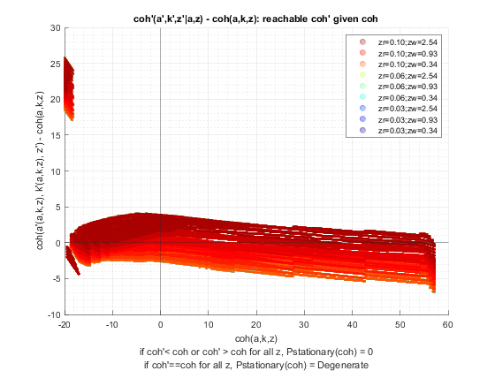 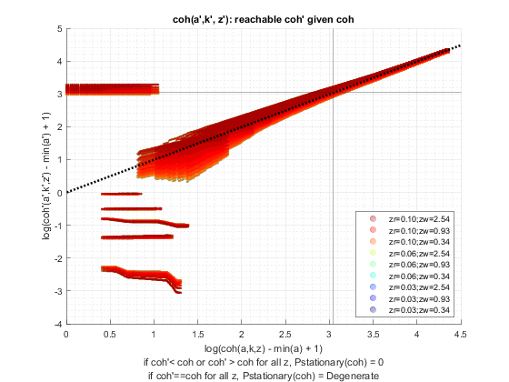 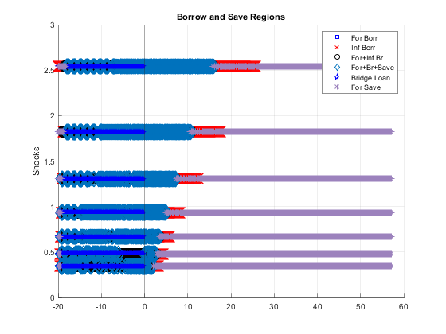 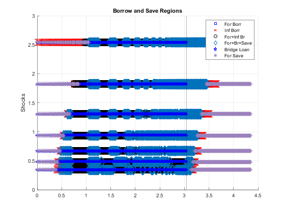 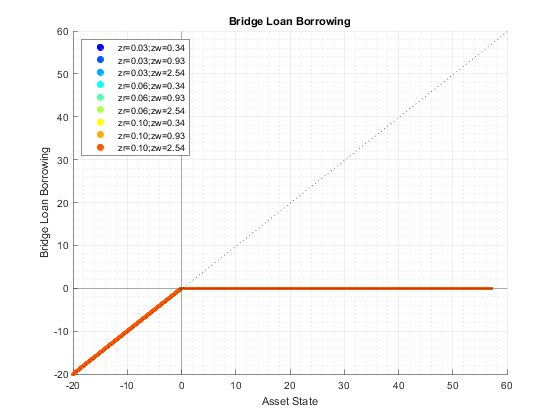 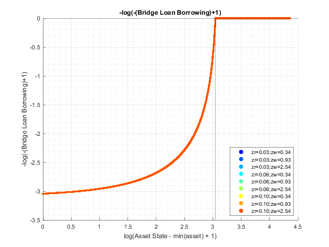 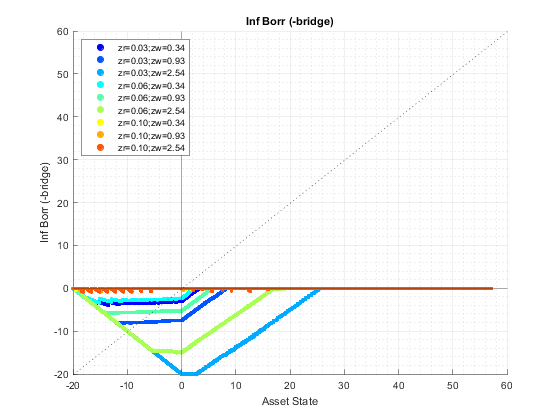 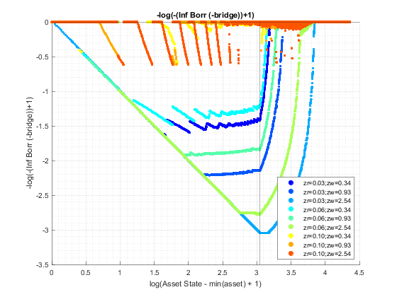 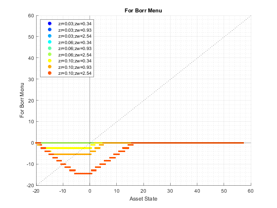 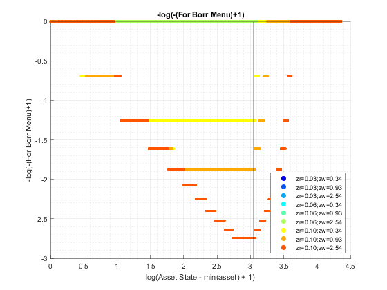 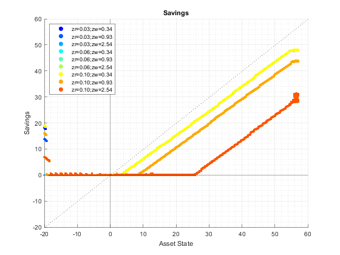 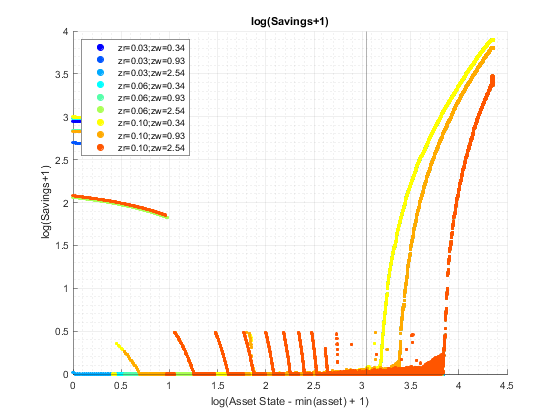 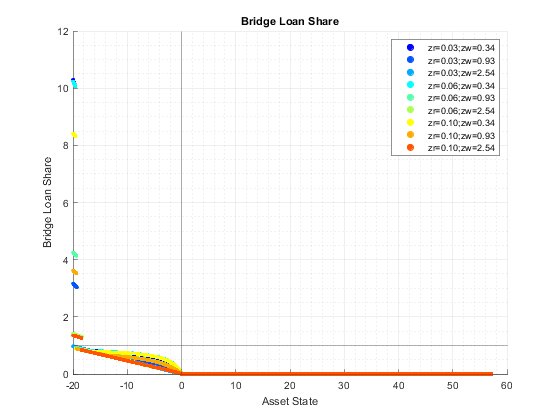 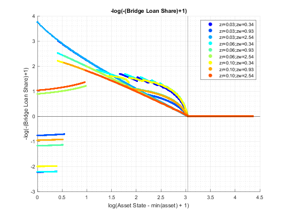 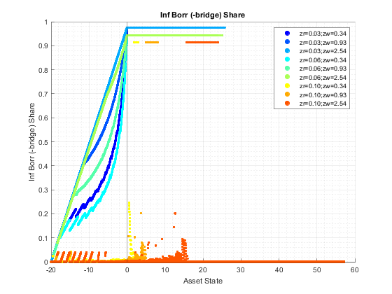 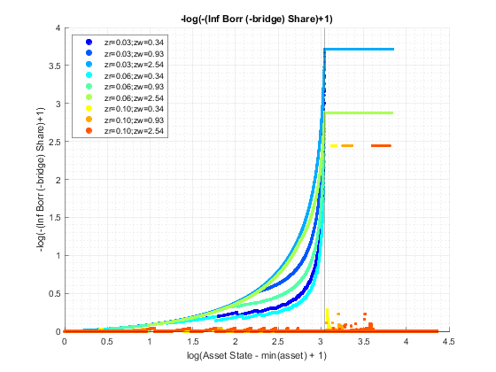 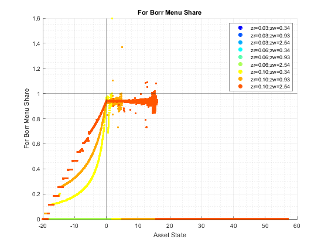 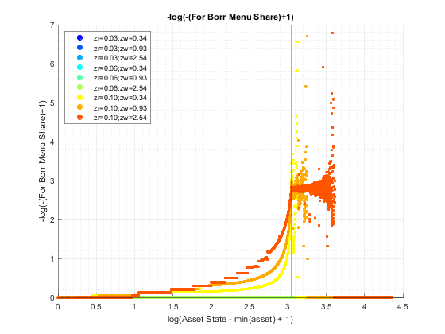 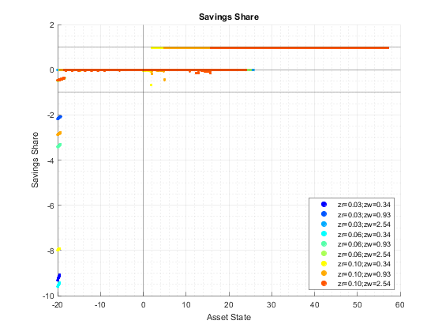 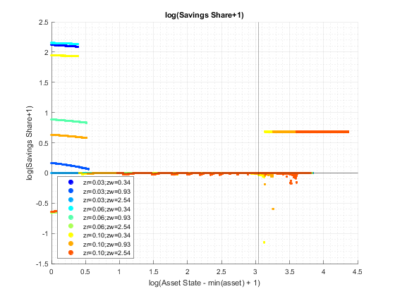